✦SPELLIA✦
MAGIC SCHOOL / BOARD GAME
人数（あなた＋ボット）
ルールとカード効果を見る
・みんなでカードを「裏向きに置く人」と「めくる人」に分かれて遊ぶ、点数取りゲームです
・めくる人は、良いカードを引けば点数が増え、悪いカードを引くと減ります
・「もう1枚いく？ やめる？」のドキドキが楽しいゲームです
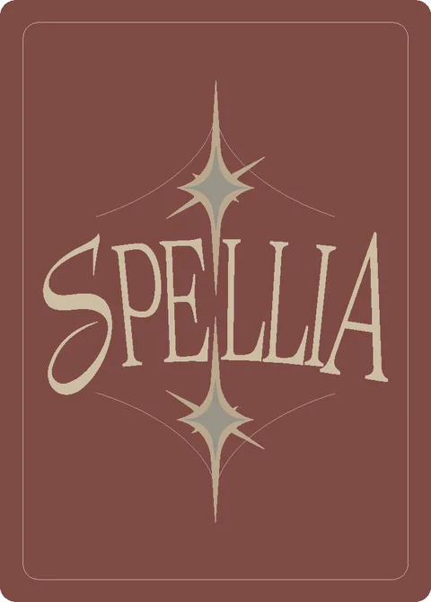
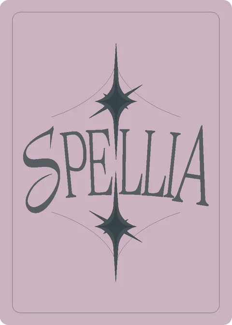
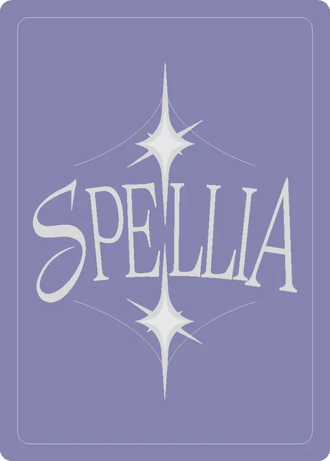
① 置く めくる人以外、1枚を裏向きに置く
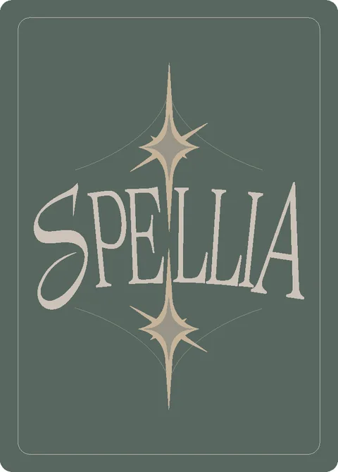
➜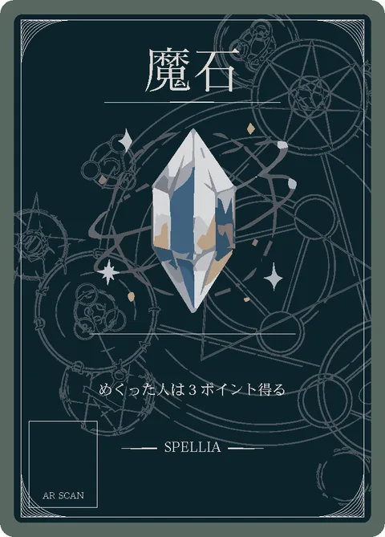
② めくる めくる人が1枚ずつ開く。最初は必ず1枚
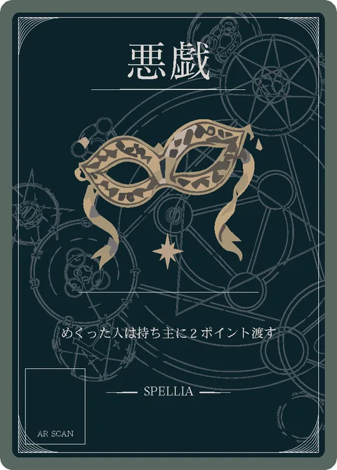
−2③ 点数が動く めくった人の点が動く。良いと増え、悪いと減る。続けるかは自由
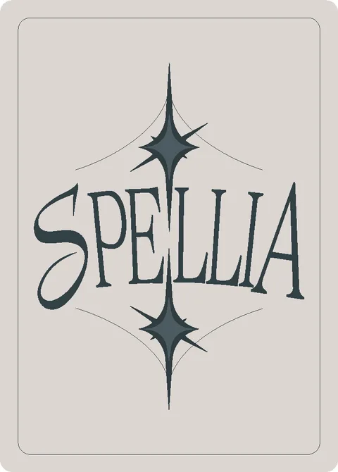
👑④ 交代して、最後に勝ち負け 次の人と交代。全員のカードがなくなったら、一番点が多い人の勝ち
言葉の意味
・「伏せる」＝カードを裏向きに置くこと（中身は、置いた人だけが知っています）
・「めくる」＝裏向きのカードを表向きにすること
・「持ち主」＝そのカードを置いた人
勝ち方
全員のカードがなくなるまで遊んで、最後に一番ポイントが多い人の勝ちです。全員0ポイントから始めて、ポイントはマイナスにもなります。
準備
全員が同じ種類のカードのセットを持ちます（12枚。6人で遊ぶ時だけ10枚）。手札は5枚で、カードを置くたびに山札から1枚もらいます。
1ターンの流れ
1. 「めくる人」を決めます（時計回りに、順番に交代します）
2. めくる人以外は、手札から1枚だけ選んで裏向きに置きます。めくる人は置きません
3. めくる人は、置かれたカードを1枚ずつめくっていきます。最初の1枚は必ずめくって、そのあとは好きなところで止められます
4. めくったカードに書かれたことが、その場で起きます（点数が増えたり減ったりします）
5. 「暴走」が出たら、そのターンはそこで終わりです
6. 「禁術」が出てもすぐには何も起きず、ターンの最後にまとめて起きます
7. めくられずに残った「天秤」は、置いた人が全員から1ポイントずつもらいます
8. 次の人が「めくる人」になって、同じことを繰り返します
たとえば…
あなたが「めくる人」の番。Bさんが置いたカードをめくると「魔石」で、あなたは+3ポイント。もう1枚、Cさんのカードをめくると「悪戯」で、Cさんに2ポイント渡すことに…。ここで止めるか、もう1枚いくかは、あなた次第です。
終わり方
全員が自分のカードを全部置き終わったら試験終了です（かかるターン数は、3人＝18ターン・4人＝16ターン・5人＝15ターン・6人＝12ターン）。
ネット対戦の注意
部屋を作った人（ホスト）がページを閉じると対戦は終わります。あいている席にはボットが入り、途中で接続が切れた人の席もボットが引き継ぎます。
カード効果（カードを押すと大きく見られます）
ネット対戦（お手軽方式）
友達と遊ぶ用です。部屋を作った人がページを開いている間だけ対戦できます。
もっと楽しむなら（世界観と物語）
✦ 世界観
魔法の総量は決まっていて、誰かが得れば誰かが失う——それがこの世界のルール。はるか昔の「星喰みの戦争」で、魔力は秩序と混沌の二つに分けられ、敗れた大魔法使いセトの名は歴史から消された。勝った創設者アストライアは魔力の半分を「天秤」に封じ、魔法学校を建てた。この実技試験には、もう一つの目的があると言われている。封印を受け継ぐ新しい「器」を選ぶこと。カード一枚一枚の物語をたどると、試験の裏側が見えてくる。
01 魔石
試験場に仕掛けられた魔石は、学校の地下から採れる青い結晶だ。地表に現れることは本来ない。あれは創設者アストライアが天秤に封じた魔力が、長い年月をかけて漏れ出し、固まった姿だという。だから魔石を手に取ると、かすかに温かい。封印の魔力が、まだ生きている証拠だ。夜になると魔石はかすかに瞬き、まるで地下の何かと呼吸を合わせているように見えるという。だから生徒たちは、魔石をポケットに入れたまま眠るのを嫌がる。夢の中で、知らない声に名前を呼ばれるからだ。実技試験で魔石を集める課題は、漏れた魔力を回収する作業も兼ねている。生徒たちが拾い集め、学校が数えて保管する。ところが不思議なことに、回収された魔石の数は、仕掛けた数と毎年少しだけ合わない。多くなる年もあれば、少なくなる年もある。過去に一度だけ、魔石が一粒も見つからなかった年がある。その年の試験の記録は、なぜか丸ごと欠けている。何が起きたのか、学校は今も語らない。今年の試験では、初日から例年より多くの魔石が見つかっている。地下の眠りが浅くなっているのか、それとも誰かが、数をごまかして持ち去っているのか。保管庫の帳簿だけが、その答えを知っている。
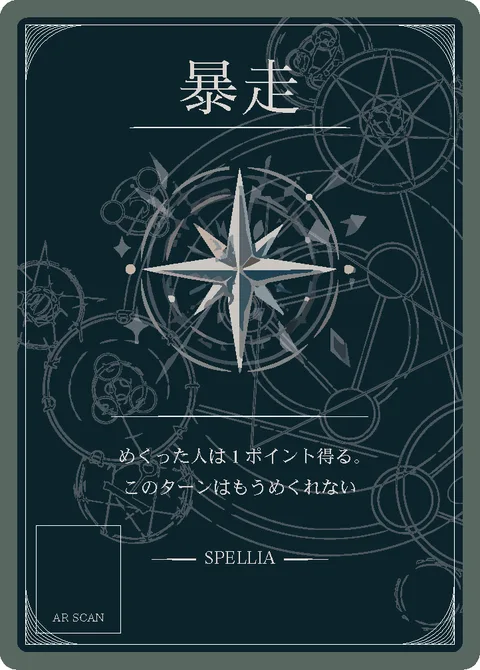
02 暴走
暴走する魔法は、制御できない弱さの証拠だと思われがちだ。けれど本当は逆だという。暴走は、体が混沌の魔力を拒絶する反応だ。星喰みの戦争で二つに分けられた魔力のうち、混沌の側は人の体になじまない。封印から漏れ出した混沌の魔力に触れた時、体は熱を持ち、魔法は意に反して暴れ出す。つまり暴走しやすい生徒は、混沌の魔力との相性が人一倍いいということだ。戦争の時代、そういう者は決まって混沌側に引き抜かれた。セトは彼らを「目覚めた者」と呼んだらしい。今年の試験でも、暴走する生徒が例年より多いと教師たちがささやき合っている。暴走した生徒は本来、処分の対象になる。しかし今年、教師たちは処分をためらっている。暴走の回数が増えるにつれ、生徒たちの魔法そのものが鋭く、強くなっているからだ。止めるべきか、育てるべきか。職員室の議論は、毎晩長引いているという。目覚めは、始まっているのかもしれない。
03 悪戯
試験場に仕掛けられた悪戯魔法の正体は、教師たちも知らない。知っているのは、仕掛けたのが人間ではないということだけだ。黒い猫が、試験の前夜に会場を歩き回る姿が、代々目撃されている。あの猫はどういうわけか、強い者の魔力を少しだけつまんで、別の者のところへ運んでいく。誰かが得をすれば、誰かが損をする。この世界の決まりを、猫は遊びながら守っているのだ。気まぐれで、残酷で、けれど決して悪意はない。そして不思議なことに、あの猫は毎年必ず、主席候補と目される生徒の前に一度だけ姿を現すという。選んでいるのか、試しているのか。それは猫にしか分からない。運ばれるのは魔力ばかりではない。誰かの落とした羽ペンが、別の誰かの机の上に置かれていることもある。悪戯の規模はいつも小さい。だが、その小ささこそが不気味なのだ。力を持て余す存在の仕業なら、学校ひとつ消し飛んでもおかしくないのに。今年も試験の前夜、黒い影が会場を横切ったと、用務員の老婆が証言している。
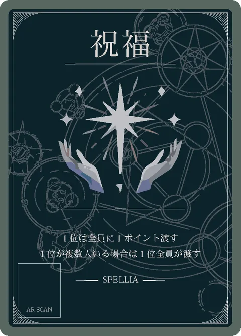
04 祝福
主席が皆に魔力を分け与える「祝福」の儀式は、実技試験の名物だ。だがこの風習の由来を知る者は少ない。初代の主席たちは、封印を一人で背負うことを拒んだという。卒業の日、天秤の前で量られた彼らは、引き受けた封印の重さを、同級生全員に少しずつ分け与えた。誰か一人が潰れないように。誰か一人が、消えてしまわないように。分け与えた魔力は巡り巡って、やがて持ち主のもとへ戻ってくる。この世界の総量は変わらないからだ。今の試験に残る祝福は、その助け合いの名残である。分け与える側にも、変化はあるという。重さが軽くなる安堵と、自分だけが知っていたはずの苦しみを皆が知ってしまう寂しさだ。今年、主席候補と呼ばれる生徒は、祝福のたびに複雑な顔をすると同級生たちが証言している。彼はもう、何かを背負い始めているのかもしれない。だから祝福を受けることは、ただの得ではない。いつか誰かの重さを、自分の肩で受ける約束でもあるのだ。
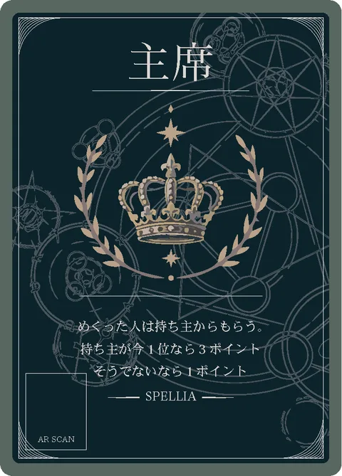
05 主席
主席の座は、魔法学校の生徒にとって最高の栄誉だ。だが歴代の主席について調べると、不思議なことに気づく。功績は記録されているのに、卒業後の足取りがどこにも残っていないのだ。肖像画もない。名前だけが、名簿の上で静かに光っている。伝えられるところでは、主席は卒業の日、天秤の前で「量られる」。それは封印の新しい器を選ぶ、学校創設以来の選抜の儀式だという。実技試験は、その器にふさわしい者を探すための長い長いふるい分けだった。選ばれた者は封印の一部を引き受け、表の歴史から静かに退く。今年の試験は、例年と空気が違う。そして伝え聞くところでは、今年、天秤はまだ誰も触れていないのに、一度だけ傾いたという。名簿をよく見ると、主席の名が記される欄の隣には、決まって小さな空白がある。次の主席の名を書くための欄だと皆は思っている。だが古い名簿ほど、その空白は丁寧に塗り潰されている。何かを、書いては消した跡のように。器の候補が、もう現れているのかもしれない。
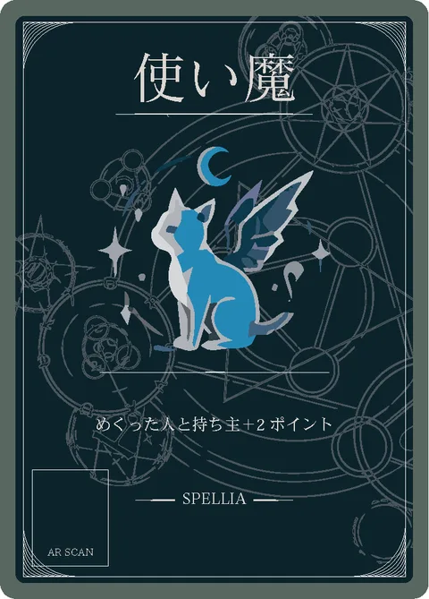
06 使い魔
使い魔の黒猫は、魔法学校で最も長く生きている住人だと言われている。初代の生徒が入学する前から校内を歩いており、代替わりをしながら「約束」を受け継いできた一族なのだという。その約束とは、星喰みの戦争に敗れた大魔法使いセトと交わしたものだ。「次の器が現れたら、知らせに来ること」。猫は千年近く、学校を見張り続けている。見つけた者と、その持ち主に福があるのは、猫が器の候補に「印」をつけているからだとも言われる。印をつけられた者は、知らないうちに運命の天秤へ載せられていく。今年、猫の姿を見たという生徒がやけに多い。約束の日が近づいているのかもしれない。印をつけられた生徒には、小さな変化が起きる。影の伸び方が少しだけ遅れたり、鏡の中の自分と目が合うのが一拍遅れたりする程度の、気づかない者も多い変化だ。猫の年齢を正確に知る者はいない。最古の記録にある猫の描写と、今の猫の模様が寸分違わないことだけが確かだ。猫は今日も、試験場の片隅で目を細めている。
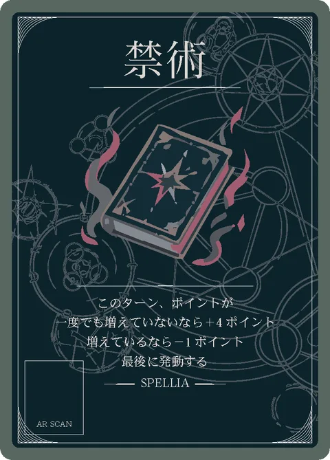
07 禁術
禁術とは、星喰みの戦争で敗れたセトが編み出した魔法の総称だ。その真髄は、この世界の決まりを破ることにある。魔力の総量は決まっていて、誰かが得れば誰かが失う。だが禁術は違う。未来の自分の魔力を、前借りして使うのだ。今この瞬間に何も得ていない者ほど、未来はたっぷり残っている。だから大きく得ることができる。逆に、すでに多くを得た者が使えば、返済が始まる。セトは戦争の終わりに、この魔法で自分のすべてを前借りしたと言い伝えられている。代価として支払わされたのは、彼の名前と姿そのものだった。勝者の歴史に敗者の名が残っていないのは、そのためだ。禁術は今も試験場に仕掛けられている。生徒の間では、禁術を最後まで唱えきった者はいないと囁かれている。途中で声が出なくなるのだという。未来の自分が、代価の徴収に気づくからだと、ある卒業生は書き残している。だからこそ、めくられた禁術は「唱えられなかった魔法」として静かに伏せられ、捨て札へ送られる。封印が、少しずつ緩んでいる証拠に。
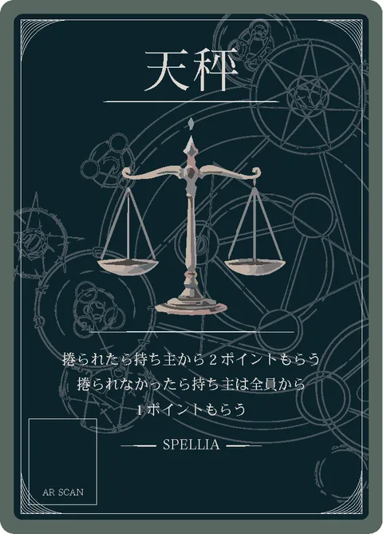
08 天秤
「星喰みの戦争」と呼ばれる大戦の終わり、世界に満ちる魔力の総量は、天秤によって二つに分けられたという。一方には秩序を、もう一方には混沌を。勝者の名は歴史に残ったが、敗者がどこへ消えたのかを知る者はいない。どちらかが重くなりすぎれば、世界は静かに傾き、やがて落ちる。魔法学校の創設者アストライアはそれを憂い、自らの魔力の半分をこの天秤に封じた。残りの半分は、学校を包む結界となった。結界は学校を守るだけでなく、地下に眠るものを外に出さないための蓋でもある。今年、その蓋の向こう側で何かが身じろぎしている気配があると、教師たちはささやき合っている。だからこの天秤は嘘を量らない。量るのは、力の大小ではなく、その力を背負う覚悟の重さだ。歴代の主席は皆、卒業の日にこの天秤の前に立ったと伝えられている。皿が水平に戻るまで、誰もその場を去ることは許されなかった。今も試験場の地下深くでは、封じられた半分の魔力が、持ち主の帰りを待っている。めくられたこのカードは、その眠りを浅くする合図かもしれない。もし試験の最中、天秤が誰の手にも触れられずに傾くことがあれば、それは世界のどこかで、大きな何かが動き始めた証拠だという。
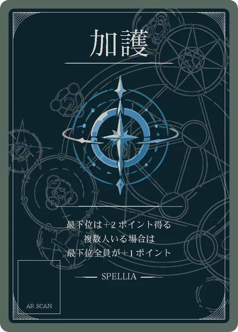
09 加護
実技試験では、最下位の生徒にこそ加護が届く。情けだと思う者もいるが、仕組みはもっと単純だ。封印から漏れ出す魔力は、「空きのある器」に流れ込む性質を持っている。魔力を多く抱えた者は満ちていて、これ以上受け取れない。逆に、持たざる者は受け皿が空っぽだ。創設者アストライアはその理屈を知っていた。だからこの試験は、最下位を切り捨てる作りにはなっていない。実際、歴代の主席の中には、実技試験の中盤まで最下位をさまよっていた者もいたという。器の器量は、順位では量れない。今年も最下位の生徒の周りでは、小さな奇跡が起き始めている。その主席は卒業の日、天秤の前でこう言ったと伝えられている。「ずっと空っぽだったから、全部入っただけだ」。以来この学校では、最下位の生徒を笑うことは固く禁じられている。誰が器になるかは、最後まで分からないからだ。地下の魔力が、新しい器を探して流れ込んでいるのかもしれない。
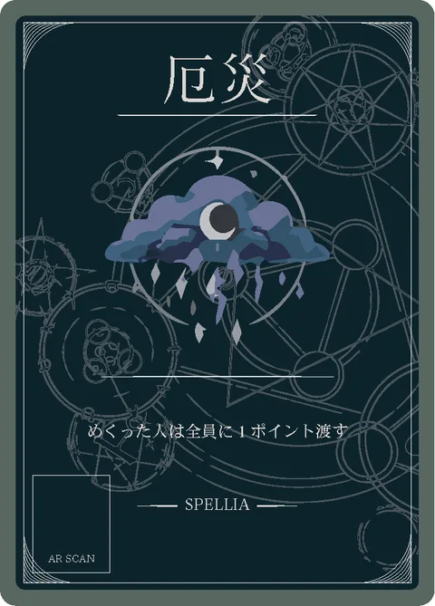
10 厄災
厄災は、頂点に立つ者を好む。最も多くの魔力を持つ者のもとへ、理由もなく不運が集まってくる現象だ。その正体は、星喰みの戦争で消えた大魔法使いセトの、魔力の残響だと言い伝えられている。残響は今も、最も強い器を探し続けている。だから一位の者に集まる。まだ誰も頂点に立っていない戦いの序盤では、残響は行き場を失って眠っている。今年の試験で観測された残響は、例年よりずっと濃い。封印の緩みと、残響の強さは、無関係ではないはずだ。やがて試験が終わる頃、封印の魔力とセトの残響、どちらが先に器を見つけるかで、この世界の傾きが決まる。厄災が近づく時、最初に起きるのは小さな綻びだ。結んだ紐がほどける。インクが滲む。唱えた魔法の着地点が、ほんの少しだけずれる。一位の生徒ほど、その綻びに早く気づく。頂点に立つということは、世界の綻びの真上に立つということでもあるのだ。生徒たちはまだ知らない。自分たちが、静かな戦争の真っただ中にいることを。
卒業制作「SPELLIA」ブラウザ版（ルール検証用）。実物のカードとは別に、パソコンやスマホのブラウザでそのまま遊べます。
ネット対戦ロビー
部屋コード：
人数（ホストだけが変えられます。集まった人数より少なくはできません）
ルールとカード効果を見る
・みんなでカードを「裏向きに置く人」と「めくる人」に分かれて遊ぶ、点数取りゲームです
・めくる人は、良いカードを引けば点数が増え、悪いカードを引くと減ります
・「もう1枚いく？ やめる？」のドキドキが楽しいゲームです
① 置く めくる人以外、1枚を裏向きに置く
② めくる めくる人が1枚ずつ開く。最初は必ず1枚
③ 点数が動く めくった人の点が動く。良いと増え、悪いと減る。続けるかは自由
④ 交代して、最後に勝ち負け 次の人と交代。全員のカードがなくなったら、一番点が多い人の勝ち
言葉の意味
・「伏せる」＝カードを裏向きに置くこと（中身は、置いた人だけが知っています）
・「めくる」＝裏向きのカードを表向きにすること
・「持ち主」＝そのカードを置いた人
勝ち方
全員のカードがなくなるまで遊んで、最後に一番ポイントが多い人の勝ちです。全員0ポイントから始めて、ポイントはマイナスにもなります。
準備
全員が同じ種類のカードのセットを持ちます（12枚。6人で遊ぶ時だけ10枚）。手札は5枚で、カードを置くたびに山札から1枚もらいます。
1ターンの流れ
1. 「めくる人」を決めます（時計回りに、順番に交代します）
2. めくる人以外は、手札から1枚だけ選んで裏向きに置きます。めくる人は置きません
3. めくる人は、置かれたカードを1枚ずつめくっていきます。最初の1枚は必ずめくって、そのあとは好きなところで止められます
4. めくったカードに書かれたことが、その場で起きます（点数が増えたり減ったりします）
5. 「暴走」が出たら、そのターンはそこで終わりです
6. 「禁術」が出てもすぐには何も起きず、ターンの最後にまとめて起きます
7. めくられずに残った「天秤」は、置いた人が全員から1ポイントずつもらいます
8. 次の人が「めくる人」になって、同じことを繰り返します
たとえば…
あなたが「めくる人」の番。Bさんが置いたカードをめくると「魔石」で、あなたは+3ポイント。もう1枚、Cさんのカードをめくると「悪戯」で、Cさんに2ポイント渡すことに…。ここで止めるか、もう1枚いくかは、あなた次第です。
終わり方
全員が自分のカードを全部置き終わったら試験終了です（かかるターン数は、3人＝18ターン・4人＝16ターン・5人＝15ターン・6人＝12ターン）。
ネット対戦の注意
部屋を作った人（ホスト）がページを閉じると対戦は終わります。あいている席にはボットが入り、途中で接続が切れた人の席もボットが引き継ぎます。
カード効果（カードを押すと大きく見られます）
ホストがページを閉じると対戦は終わります。
試験結果
人をタップすると、その人のターンごとの記録が見られます
✦ SPELLIAの遊び方 ✦
裏向きのカードをめくって、点数を競うゲーム。
① 置く めくる人以外、1枚を裏向きに置く
② めくる めくる人が1枚ずつ開く。最初は必ず1枚